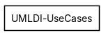
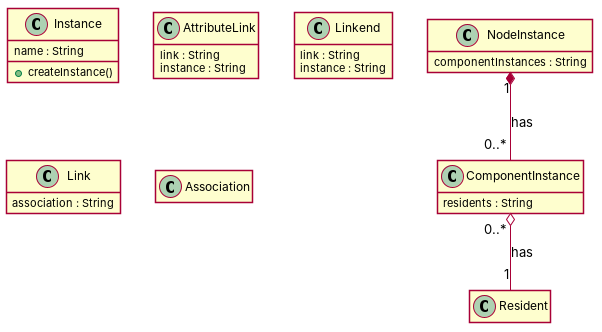

R1: Instance is a class which belongs to Common_Behavior package R2: AttributeLink is a class which belongs to Common_Behavior package R3: The link class. R4: The linkend class R5: the componentinstance class R6: the nodeinstance class R7: An Instance is owned by 0 or several instances R8: The instance has one or more classifiers. R9: The instance has zero or more slots from the attributelink type. R10: attributelink has zero or one instance of the Instance type. R11: attributelink has zero or one linkend attributes from the linkend type R12: the link instance has an association attribute from the association type R13: linkend has one link attribute of the link type R14: linkend has one attribute of the instance type R15: componentinstance has zero or more residents R16: nodeinstance has 0 or more componentinstance node that serves as resident
Red, struck-through: removed by ambiguity removal; green: added.
| actors (0 → 0) |
|---|
| classes (5 → 5) |
|---|
| AttributeLink |
| Attributelink |
| InstanceType |
| Linkend |
| Resident |
| attributes (1 → 1) |
|---|
| AttributeLink.link |
| relations (0 → 0) |
|---|
| id | req | type | cue | status | readings / explanation |
|---|---|---|---|---|---|
| A1 | R7 | quantifier | 0 or several | resolved | 0..*; 0..0 The phrase '0 or several' is ambiguous and could mean 0 to many or 0 to 0. |
| A2 | R8 | quantifier | one or more | resolved | 1..*; 1..1 The phrase 'one or more' is ambiguous and could mean 1 to many or 1 to 1. |
| A3 | R9 | quantifier | zero or more | resolved | 0..*; 0..0 The phrase 'zero or more' is ambiguous and could mean 0 to many or 0 to 0. |
| A4 | R15 | quantifier | zero or more | resolved | 0..*; 0..0 The phrase 'zero or more' is ambiguous and could mean 0 to many or 0 to 0. |
| A5 | R16 | quantifier | 0 or more | resolved | 0..*; 0..0 The phrase '0 or more' is ambiguous and could mean 0 to many or 0 to 0. |


"""Code skeleton generated from the shared model of D2/UMLDI-UseCases.
Every class and method records the requirement(s) it traces to."""
from __future__ import annotations
import dataclasses as _dc
import enum as _enum
import typing as _t
@_dc.dataclass
class Instance:
"""Source: R1"""
name: _t.Optional[str] = None
def createInstance(self) -> None:
"""Operation."""
raise NotImplementedError
@_dc.dataclass
class AttributeLink:
"""Source: R2"""
link: _t.Optional[str] = None
instance: _t.Optional[str] = None
@_dc.dataclass
class Linkend:
"""Source: R4"""
link: _t.Optional[str] = None
instance: _t.Optional[str] = None
@_dc.dataclass
class Link:
"""Source: R3"""
association: _t.Optional[str] = None
@_dc.dataclass
class ComponentInstance:
"""Source: R5"""
residents: _t.Optional[str] = None
resident: _t.Optional["Resident"] = None
@_dc.dataclass
class NodeInstance:
"""Source: R6"""
componentInstances: _t.Optional[str] = None
@_dc.dataclass
class Association:
"""Source: -"""
pass
@_dc.dataclass
class Resident:
"""Source: -"""
pass
| python_compiles | True |
|---|---|
| java_compiles | True |
| attribute_mismatches | 0 |
| method_mismatches | 0 |
| use_cases | 0 |
| use_cases_without_actor | 0 |
| use_cases_without_method | 0 |
| actors_without_use_case | 0 |
| relations_to_unknown_class | 0 |
| inconsistencies | 0 |
| inconsistency_rate | 0.0 |
| requirement_coverage | 0.375 |
| validator fixes | |
| assumptions for open ambiguities | [] |
| element | P | R | F1 | TP/FP/FN |
|---|---|---|---|---|
| classes | 0.625 | 0.833 | 0.714 | 5/3/1 |
| attributes | 0.0 | 0.0 | 0.0 | 0/8/0 |
| relations | 0.5 | 0.059 | 0.105 | 1/1/16 |
| relations_strict | 0.5 | 0.056 | 0.1 | 1/1/17 |